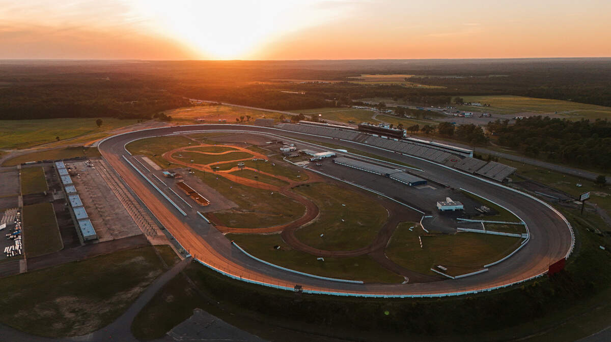

Bon, parlons un peu de NASCAR.
Parce que ça faisait longtemps que je n'avais pas vu un rookie me donner autant envie de regarder une course jusqu'au dernier tour.
Logan Mercer.
Retenez ce nom.
Le gars vient d'arriver et il est déjà en train de mettre une raclée à des pilotes qui connaissent ces circuits depuis plus longtemps qu'il ne sait probablement conduire.
Et je ne parle pas de petites victoires chanceuses.
Je parle de courses où il part derrière, remonte le peloton, évite trois gros accidents et finit devant avec une facilité franchement énervante.
Aucun d'eux ne se connaît. Pourtant leurs histoires se ressemblent. Pas de moteur secret. Pas de voiture qui sort du lot. Une bonne bagnole, un bon pilote, une bonne équipe.
Les fans commencent déjà à l'appeler "Lucky Logan".
Et je dois reconnaître que le surnom n'est pas complètement volé. À Daytona, il évite un énorme crash à quelques mètres près. À Talladega, deux voitures se percutent juste devant lui et ouvrent miraculeusement une trajectoire. À Charlotte, son pneu commence à perdre de la pression. Il rentre aux stands. Deux tours plus tard, plusieurs voitures crèvent exactement au même endroit. À chaque fois, Mercer s'en sort. À chaque fois, quelqu'un d'autre prend le mur. À chaque fois, il gagne.
Et c'est là que ça devient bizarre. Parce que j'ai commencé à regarder les accidents plutôt que les victoires. Et il y en a. Beaucoup. Des moteurs qui cassent.Des pneus qui éclatent. Des voitures qui partent brutalement en travers. Des pilotes qui jurent que leur voiture fonctionnait parfaitement jusqu'à quelques secondes avant l'accident. Et presque systématiquement... Logan Mercer est juste derrière. Ou juste devant. Ou suffisamment loin pour passer au travers.
Certains parlent de chance.
Les spectateurs adorent ça. Ils disent que Mercer a une bonne étoile. Qu'il possède ce genre de talent qu'on ne peut pas expliquer. Vous savez, le truc que les vieux fans racontent dans les tribunes avec une bière à la main :
Peut-être. Après tout, la NASCAR est faite de ça aussi. Des secondes. Des décisions. De la mécanique. Du hasard. Et parfois... de la chance.
Moi, en tout cas... Je vais regarder sa prochaine course.